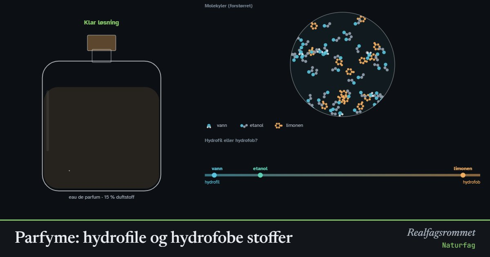

Parfyme: hydrofile og hydrofobe stoffer
Duftstoffer er for det meste hydrofobe og løser seg dårlig i vann. Derfor lages parfyme med etanol, som har både en hydrofil og en hydrofob del. Med for mye vann blir parfymen blakket, og oljen skiller seg ut.
Start animasjonen
Formler
Om animasjonen
Hydrofile stoffer er polare og blandes med vann. Hydrofobe stoffer er upolare og blandes med olje og fett. Huskeregelen er «likt løser likt».
Duftstoffene i parfyme er for det meste hydrofobe karbonkjeder og ringer. Limonen fra appelsinskall har ingen polar gruppe i det hele tatt. Linalool fra lavendel har én OH-gruppe, og vanillin har flere polare grupper. De er derfor litt mer hydrofile.
Etanol har en hydrofil OH-gruppe og en kort hydrofob karbonkjede. Den blandes både med vann og med duftstoffene og holder alt i én løsning. Etanolen fordamper raskt fra huden og tar med seg duften.
Når det blir for lite etanol, samler duftmolekylene seg i små dråper. Dråpene sprer lyset, og blandingen blir blakket. Med enda mindre etanol flyter oljen opp som et eget lag, og vanillin, som er et fast stoff, legger seg på bunnen. Grensene i modellen er omtrentlige.
Prøv dette
- Velg limonen og trykk «Bare vann». Hva skjer? Øk etanolinnholdet til blandingen blir klar. Hvor mye etanol trengs?
- Sammenlign limonen og vanillin. Hvilket stoff trenger minst etanol, og hvorfor?
- Hvorfor trenger en parfyme med mye duftstoff mer etanol enn en eau de cologne?
- Hvorfor får du ikke vasket olje av hendene med bare vann? Hva gjør såpe annerledes?
Kompetansemål
- Naturfag: Kjemiske bindinger og stoffenes egenskaper